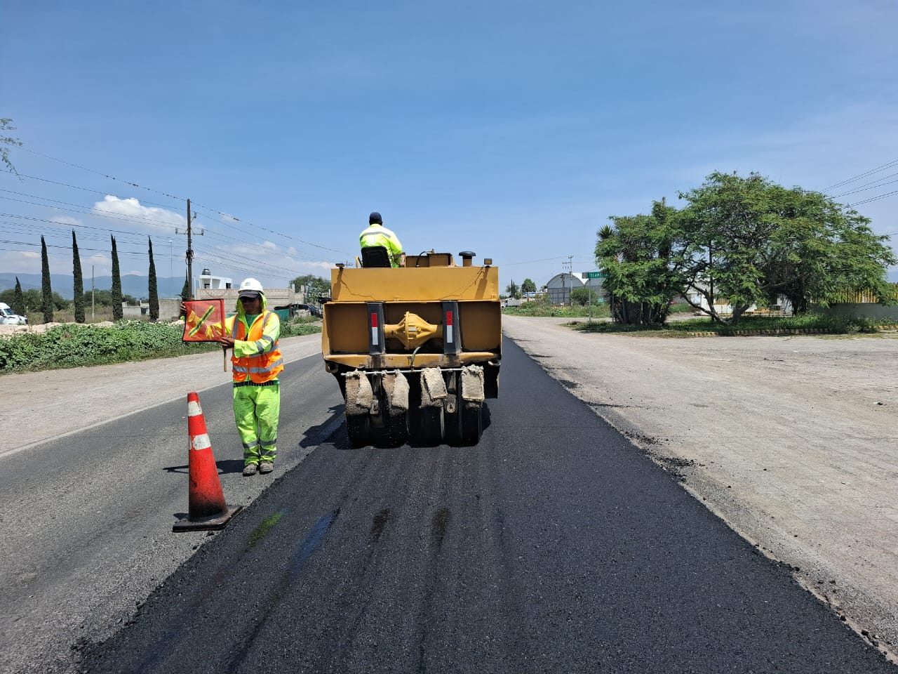

MANTENIMIENTO Y REHABILITACIÓN VIAL
Implementamos estrategias de mantenimiento y rehabilitación para mayor durabilidad de la vía y elementos aledaños tales como señalamientos.

RETROREFLEXIÓN HORIZONTAL
Nuestro equipo de retroreflectancia permite medir el desempeño del señalamiento horizontal en condiciones reales, asegurando que la vialidad cumpla con los niveles de visibilidad nocturna y diurna requeridos.


RETROREFLEXIÓN VERTICAL
Este equipo permite medir la retroreflectancia de señales verticales, asegurando que mantengan niveles adecuados de visibilidad y legibilidad, tanto de día como de noche.
CONSERVACIÓN RUTINARIA DE INFRAESTRUCTURA VIAL
- Bacheo superficial y profundo
- Control de vegetación
- Sellado de grieta
- Tratamientos superficiales
- Renivelaciones